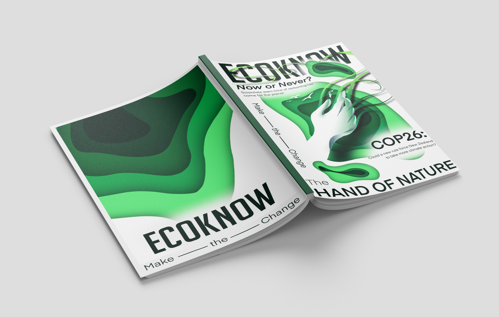
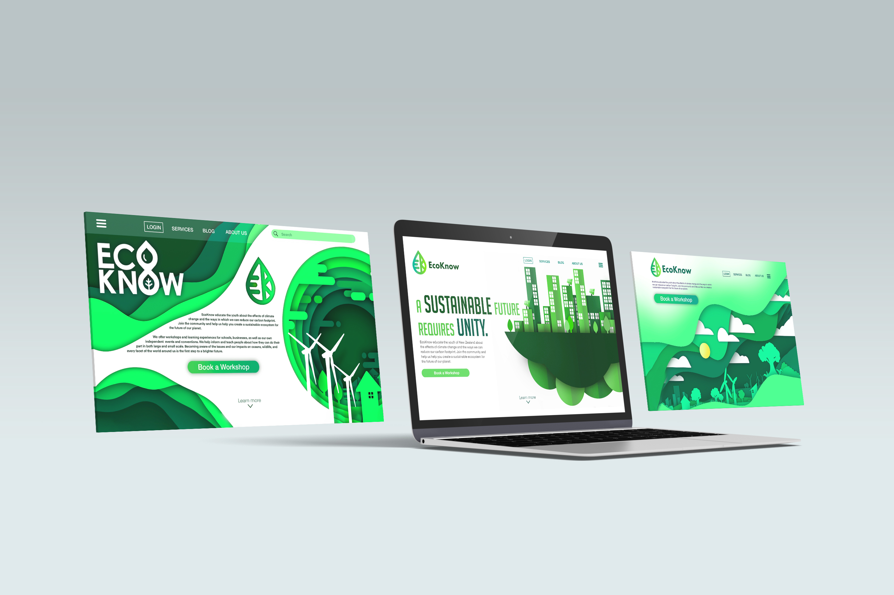
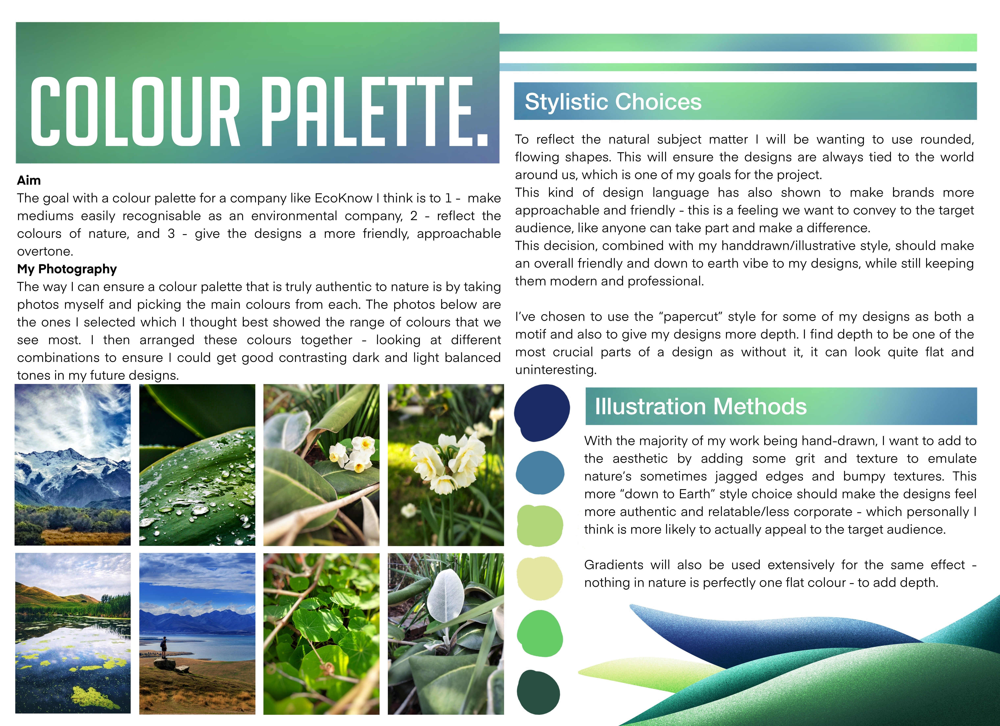
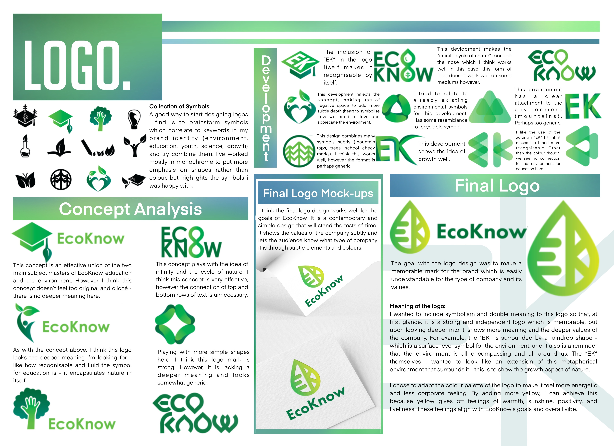
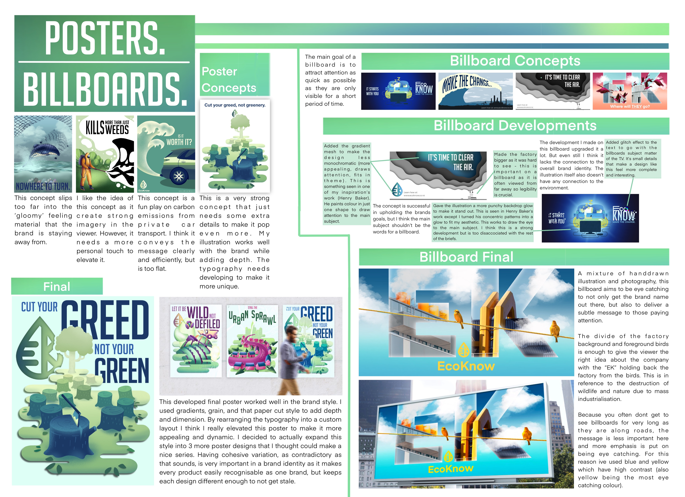
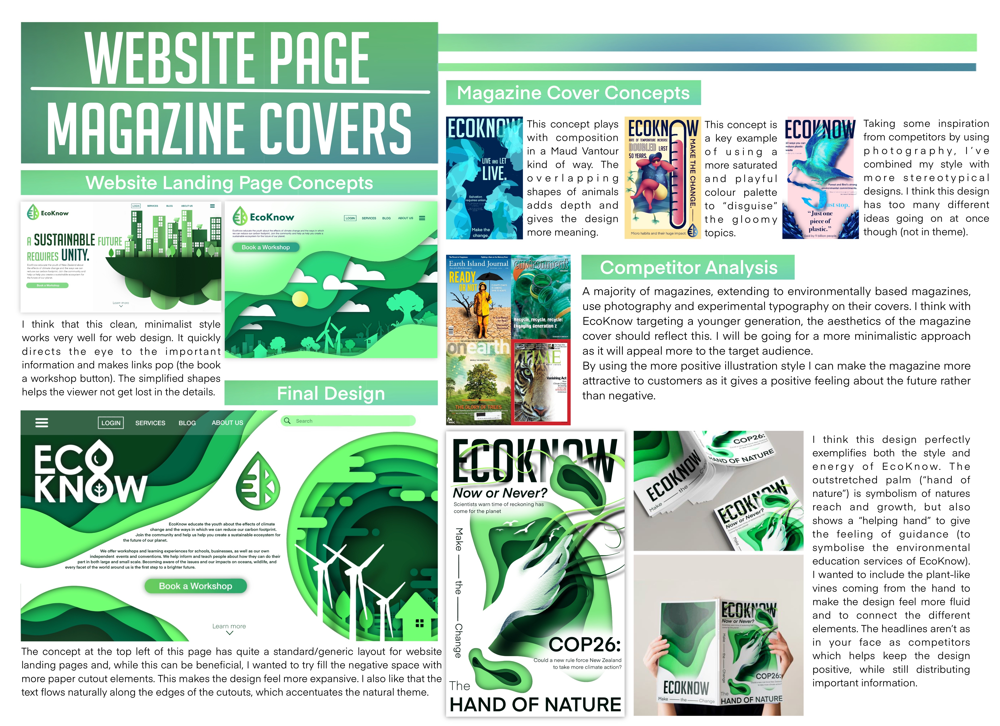

EcoKnow
EcoKnow is a brand identity I came up with that is committed to spreading awareness and educating young people around climate change and what we can do to help. Schools and event holders can hire EcoKnow to do presentations and help fundraise for different environmental causes. Branding for EcoKnow should feel approachable and down-to-earth to help young people feel more comfortable.

The selection of collateral for this project was important as I wanted to tailor the kinds of collateral for an education environment. I pictured schools having posters around with catchy phrases that children would be able to see and take messages from. Other collateral such as magazines, infographics, and websites are also easily accessible by students and teachers alike.
 Below are some of the documentation pages I made to help explain my thought process and analyses throughout.
   